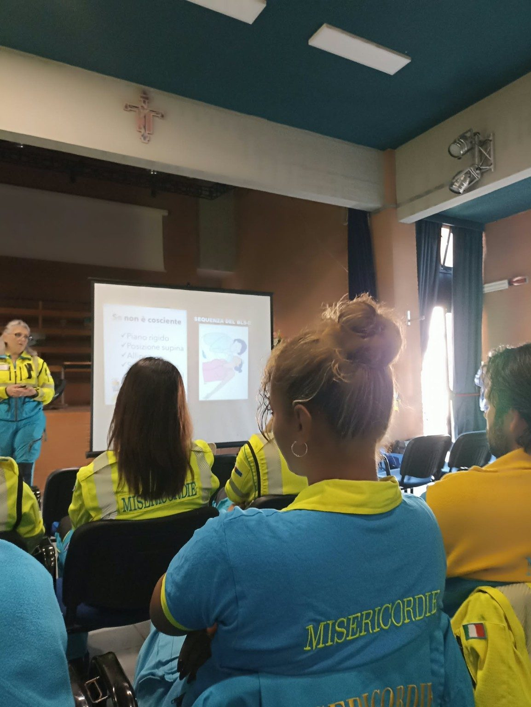

Che cosa succede in un arresto cardiaco, che cosa può fare chi è vicino e che cosa dice la legge. Le manovre si imparano poi con un istruttore.
Misericordia di Ariccia
Presentate la lezione: non è un corso. Oggi si capisce perché la rianimazione riguarda tutti; le manovre si provano solo su un manichino, con un istruttore, in un corso. Chiedete alla classe chi ha già visto un defibrillatore e dove.
Rianimazione e DAE
Che cos'è un arresto cardiaco
Il cuore smette all'improvviso di funzionare. Si riconosce da due segni:
la persona non risponde quando la chiami e la scuoti delicatamente;
non respira normalmente: non respira, oppure fa respiri rari e rumorosi.
Quei respiri rari e rumorosi non sono un buon segno: con chi non risponde e respira così si comincia subito la rianimazione.
Misericordia di Ariccia
I due segni sono quelli della scheda «Arresto cardiaco» del dossier Primo soccorso passo passo del sito (linee guida ERC/IRC 2025). Non si cerca il polso: bastano «non risponde» e «non respira normalmente».
Rianimazione e DAE
Quanto è frequente, in Europa
55
arresti cardiaci fuori dall'ospedale ogni 100.000 abitanti in un anno, trattati dai soccorsi
67
anni: l'età media di chi ne è colpito
58%
dei casi: quanto spesso chi è presente comincia la rianimazione (dal 13 all'82% da Paese a Paese)
7,5%
delle persone colpite sopravvive (dal 3,1 al 35% da Paese a Paese)
Fonte: Linee guida ERC 2025, versione italiana IRC, capitolo 2 «Epidemiologia» (dati dello studio europeo EuReCa-3, 2022).
Misericordia di Ariccia
Domanda alla classe prima di mostrare i numeri: «Secondo voi, su cento persone colpite, quante sopravvivono?». Le differenze fra Paesi dipendono molto da quanto spesso chi è presente comincia subito le compressioni e usa il defibrillatore.
Rianimazione e DAE
Succede soprattutto in casa
70%
in Europa: gli arresti cardiaci che avvengono in una casa
76%
in Italia: più di tre su quattro (76,3%)
2,6–59%
da Paese a Paese: quanto spesso si usa un defibrillatore prima che arrivino i soccorsi
Chi si trova accanto è spesso un familiare: un nonno, una mamma, un fratello. Per questo conviene che lo sappiano fare tutti, anche voi.
Fonte: Linee guida ERC 2025, versione italiana IRC, capitolo 2 «Epidemiologia».
Misericordia di Ariccia
Il capitolo indica che circa il 10% degli arresti cardiaci avviene in luoghi pubblici o in strutture per anziani, e percentuali minori in scuole, impianti sportivi e luoghi di lavoro.
Rianimazione e DAE
La catena della sopravvivenza
1
Riconoscimento precoce e chiamata di aiuto
per prevenire l'arresto cardiaco
2
Rianimazione e defibrillazione precoce
per proteggere il cervello e far ripartire il cuore
3
Supporto avanzato e cure dopo la rianimazione
per il cuore e il cervello
4
Sopravvivenza e recupero
per ritrovare la qualità della vita
I primi due anelli, in giallo, toccano a chi è presente. Gli altri ai soccorritori, all'ospedale e alla riabilitazione.
Misericordia di Ariccia
Le Linee guida ERC 2025 (capitolo 3, «Sistemi che salvano vite», figura 2) mantengono la catena a quattro anelli. I primi due anelli dipendono da chi è presente, prima che arrivino i soccorsi.
Rianimazione e DAE
Primo anello: chiama il 112
Chiama il 112 e metti il vivavoce: l'operatore ti guida.
Di' che cosa è successo e dove: comune, via, numero civico, piano.
Resta in linea finché l'operatore te lo chiede e segui le sue istruzioni.
Fatti portare subito un defibrillatore (DAE): se non sai dov'è, chiedi all'operatore.
Per la legge 116 del 2021 le centrali del 118 danno al telefono le istruzioni per la rianimazione e per il DAE, e se possono ti dicono dov'è il più vicino.
Misericordia di Ariccia
Fonti: scheda «Arresto cardiaco» e scheda «Il defibrillatore» del dossier del sito; guida del sito «Cosa succede quando chiami il 112»; legge 116/2021, articolo 7, comma 3 (Normattiva). Nel Lazio il 112 è gratuito e si chiama anche senza credito.
Rianimazione e DAE
Secondo anello: le compressioni
Mani una sull'altra al centro del torace, braccia tese.
Comprimi 5-6 cm, 100-120 volte al minuto, con meno interruzioni possibili.
Continua finché arrivano i soccorsi o la persona riprende a respirare normalmente.
Non avere paura di sbagliare: senza compressioni non c'è possibilità di sopravvivenza. Non fermarti per cercare il polso.
Misericordia di Ariccia
Testo identico alla scheda «Arresto cardiaco» del dossier del sito. Il ritmo e la profondità si imparano solo provando su un manichino con un istruttore: oggi non si prova sui compagni.
Rianimazione e DAE
Il defibrillatore (DAE): puoi usarlo anche tu
Appena arriva, aprilo e accendilo e segui la sua voce.
Attacca le piastre sul torace nudo, come nel disegno sulle piastre. Se siete in due, uno continua le compressioni intanto.
Durante l'analisi e la scarica nessuno deve toccare la persona.
Dopo la scarica, o se non serve, riprendi subito le compressioni e continua a seguire il DAE fino all'arrivo dei soccorsi.
Si riconosce dal cartello verde con un cuore e un fulmine.
Misericordia di Ariccia
Testo identico alla scheda «Il defibrillatore (DAE)» del dossier del sito. Nei bambini sotto i 25 kg, se c'è, si usa la modalità pediatrica; se non c'è, va bene quella per adulti. Il DAE analizza il cuore e dice lui se la scarica serve.
Rianimazione e DAE
Cosa dice la legge: chiunque può usare il DAE
La legge 4 agosto 2021, n. 116 ha cambiato la legge 120 del 2001. Oggi dice che:
se non c'è personale sanitario o personale formato, in caso di sospetto arresto cardiaco il DAE lo può usare anche chi non ha fatto un corso;
chi, senza formazione, usa il DAE o fa la rianimazione per soccorrere una persona è protetto dall'articolo 54 del Codice penale (stato di necessità): non rischia di essere punito.
Il DAE non va temuto: è fatto per essere usato da chiunque, e la sua voce ti guida passo per passo.
Misericordia di Ariccia
Fonte: legge 116/2021, articolo 3, che riscrive l'articolo 1, comma 1, della legge 120/2001 (testo letto su Normattiva il 18/11/2026). Chi ha fatto un corso BLSD resta il primo a dover intervenire, se è presente.
Rianimazione e DAE
Il soffocamento: 5 colpi, 5 spinte
Mentre mangia, la persona si porta le mani alla gola, non riesce a parlare né a tossire. Chiedile: «Stai soffocando?»
Se tossisce, incoraggiala a tossire. Se non ci riesce più, chiama subito il 112 (o fallo chiamare) e metti il vivavoce.
Dietro di lei, un po' di lato, piegala in avanti: fino a 5 colpi forti con il palmo tra le scapole.
Se non basta, fino a 5 compressioni addominali: pugno sopra l'ombelico, spingi in dentro e in su. Alterna 5 e 5.
Misericordia di Ariccia
Testo della scheda «Soffocamento» del dossier del sito, per l'adulto. Le compressioni addominali sono la manovra di Heimlich. Non si provano sui compagni: si imparano su un manichino in un corso.
Rianimazione e DAE
Il soffocamento: se le cose cambiano
Se perde conoscenza: accompagnala a terra e inizia la rianimazione; se nessuno ha ancora chiamato il 112, chiamalo subito.
Dopo le compressioni addominali la persona va sempre fatta vedere da un medico.
Non infilare le dita in bocca alla cieca.
Nei lattanti e nei bambini piccoli la tecnica è diversa: si impara nei corsi di disostruzione pediatrica (P-BLSD).
Misericordia di Ariccia
Ancora la scheda «Soffocamento» del dossier, identica. Molti ragazzi fanno da baby sitter a fratelli o cuginetti: è un buon motivo per fare anche un corso di disostruzione pediatrica.
Rianimazione e DAE
La legge 116 del 2021 e la scuola
Le iniziative di primo soccorso per gli studenti delle scuole secondarie devono comprendere la rianimazione di base, l'uso del defibrillatore e la disostruzione delle vie aeree, con attenzione all'età.
Sono estese a docenti e personale della scuola.
Le scuole le organizzano in autonomia, in accordo con le strutture sanitarie e di volontariato.
Il 16 ottobre, Giornata mondiale della rianimazione cardiopolmonare, ogni scuola può dedicarvi iniziative.
Misericordia di Ariccia
Fonte: legge 116/2021, articolo 5, che aggiunge tre periodi al comma 10 dell'articolo 1 della legge 107/2015 (Normattiva, 18/11/2026). L'articolo 8 prevede anche una campagna annuale di sensibilizzazione nelle scuole, promossa dai Ministeri della salute e dell'istruzione.
Rianimazione e DAE
Kids Save Lives: i ragazzi salvano vite
È la campagna mondiale promossa dallo European Resuscitation Council e da altre società scientifiche, con il patrocinio dell'Organizzazione mondiale della sanità. In Italia la sostiene l'Italian Resuscitation Council.
La raccomandazione: insegnare la rianimazione a scuola dai 12 anni, o anche prima, per 2 ore all'anno. Chi impara a scuola lo insegna anche in famiglia, e così cresce il numero di persone pronte ad aiutare.
Misericordia di Ariccia
Fonti: Linee guida ERC 2025, versione IRC, capitolo 2, paragrafo su IRC e Kids Save Lives; dichiarazione «Kids save lives» (Böttiger e altri, Resuscitation 2015), riportata nella presentazione IRC «Kids save lives in Italia e in Europa».
Rianimazione e DAE
Le manovre si imparano con un istruttore
Queste slide spiegano perché imparare. Il come si impara solo in un corso, provando su un manichino, con un istruttore che corregge mani, braccia e ritmo.
Il corso BLSD insegna rianimazione e defibrillatore nell'adulto; il P-BLSD nel bambino e nel lattante, con la disostruzione.
Alla Misericordia di Ariccia li tengono formatori abilitati da ARES 118.
Per un corso con la vostra scuola: sede@misericordia-ariccia.it www.misericordia-ariccia.it/servizi/formazione/

Foto: Misericordia di Ariccia
Misericordia di Ariccia
Dati della pagina Formazione del sito: corsi BLSD e P-BLSD tenuti da formatori abilitati ARES 118, contenuti allineati alle Linee guida ERC 2025. I corsi partono al raggiungimento di un numero minimo di partecipanti.
Rianimazione e DAE
Parliamone
Sapete dove si trova il defibrillatore più vicino alla vostra scuola, alla palestra, a casa?
Che cosa vi farebbe esitare davanti a una persona a terra? Che cosa vi aiuterebbe a decidere?
Perché la legge protegge chi prova a soccorrere, anche senza un corso?
Chi, nella vostra famiglia, vorreste che imparasse queste cose?
Misericordia di Ariccia
Domande aperte, senza risposte giuste o sbagliate. Per l'esitazione e la paura di sbagliare c'è la scheda di riflessione «Cittadinanza attiva»: si può usare subito dopo.
Rianimazione e DAE
Da ricordare
Non risponde e non respira normalmente: è un arresto cardiaco.
Chiama il 112 con il vivavoce e fatti portare il DAE.
Comprimi al centro del torace: 5-6 cm, 100-120 volte al minuto.
Accendi il DAE e segui la sua voce.
E poi fai un corso: due ore che possono valere una vita.
Misericordia di Ariccia
Riassunto della lezione. Le «due ore» richiamano la raccomandazione di Kids Save Lives (2 ore all'anno). Lasciate la slide proiettata mentre la classe fa domande.